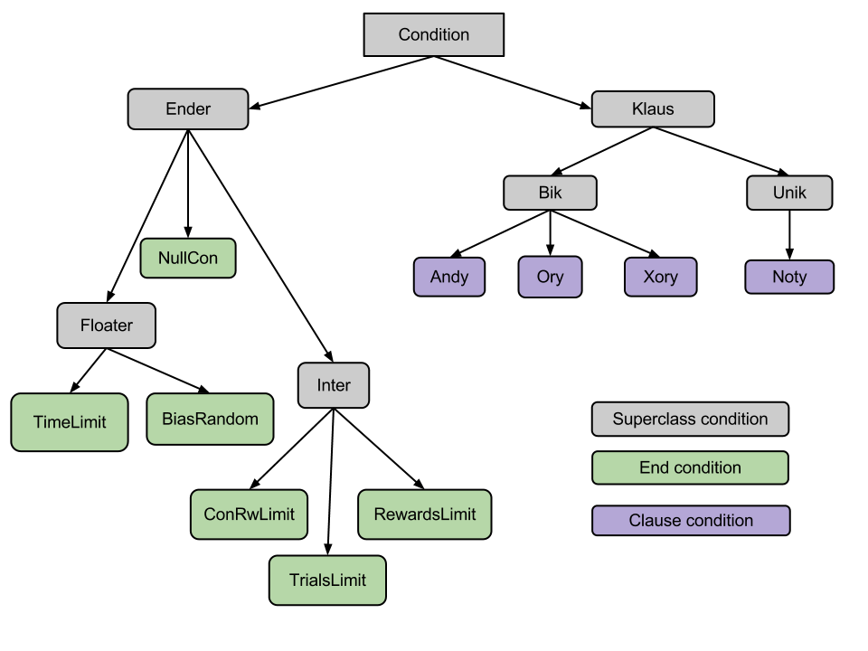

1. Experiment Framework
Intervals
Intervals are blocks of time during the experiment. The type of interval determines the types of actions that may occur in that time. Types of interval include:
- Nogo At the end of this interval a reward is given, only if the lever was never pressed during this interval
- Reward If a lever is pressed during this interval, one of the active valves will deliver water.
- Tone A tone is played throughout the duration of this interval.
At the start of this interval the associated valves are also opened.
Note: In the Stony Brook PyView implementation, we should not associate any actions
as the Begin-action for Tone Intervals, because that gets linked to PlayTone action at the start of experiment runtime
- Wait During a wait nothing happens. No lever press are rewarded or tone delievered. Ex: ITI
To read more about intervals, read the AP for Intervals
Actions
Actions are program control functions. They can be performed by:
user manually triggering
upon start, end, or lever press in an interval
automatically triggered by another action
There are the following subclasses of Actions:
- Change Interval Duration changes the duration of an interval by an additive or multiplicative constant.
- Jump moves interval pointer to another interval
- Play Tone is not an active action in the experiment paradigm. It is used during our particular PyView implementation to attach to the begin action of any Tone intervals.
- Taste Delivers taste to experiment subject.
Conditions
A condition or a grouping of conditions that about the conditions of the experiment during runtime.
An End Condition takes no other conditions to be its children conditions in the condition tree. They normally directly tell us something about the experiment run. It's truth value is independent of other conditions
A Clause condtion takes one or two children conditions. The truth value it returns is dependent on its children conditions.

To find out more about what each condition class is view the Conditions document
II. Stony Brook Neurology Lab Implementation
Library packages
- framework contains abstract experiment paradigm structure. See Experiment Framework for more info.
- libnidaqmx National Intruments card driver library. Made by Pearu Peterson
Files
- CondTree module used to build and maintain the conditions tree used in several parts of the Editor
- Editor is the graphical user interface (GUI) used to create and edit the XML experiment paradigm files
- gui module containing the sub panels in PyView
- neuroconnectmodule where all the hardware (NI card) control functions reside
- PyView main experiment execution program
- test_tonetest tone scripts (command line)
- ToneControltest tone script (GUI)
- uservars list of global variables and functions. Most of them deal with the names and colors of things